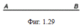
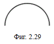
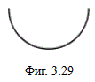

Беседа 2828 от 3877 · Беинса Дуно
Една основна идея
Отче наш.
Изпейте „В начало бе Словото“
Пишете върху темата: „Учението като метод за постижение“.
Изпейте песента: „Мога да кажа“.
Коя е основата на правата линия? Ако някой ви запита: „Kоя е основата на правата линия?“, какво ще отговорите? Или някой да ви каже: „Kоя е основата на живота?“ Под думата „основа“ на физическия свят разбираме това, върху което може да се гради. Тогава как бихте разграничили вие, каква е разликата между физическия свят, духовния свят и Божествения свят? По какво се различават? Казвате: „Физически свят“. По какво се отличава физическия свят от духовния? По какво се отличава духовния свят от Божествения? Сега може да се дадат много отговори, но има една идея, която трябва да седи вътре в живота. Знанието съществува и дава сила на човека. Ако някой ви попита: „В какво седи новото учение“, какво ще отговорите? Или имате едно ново верую, в какво седи това ново верую? Казвате, че вие вярвате, както едно време, хората вярвали. Че няма нищо ново, ако вярваш, както волът вярвал, ако вярваш както мравята вярва, или ако вярваш както птицата вярва. Какво ново има в тази вяра? Казвате: „Вярвам както едно време са вярвали“. Тогава няма ново. Новото се различава коренно от старото. После във вас седи идеята, вие искате да се покажете на окръжаващата среда, че вие не се различавате от тях. Казвате: „Двама хора мязат ли си?“ Те най-първо, ако си мязат един на друг, няма да се обичат. Ама то е едно противоречие. Какво разбирате под думите: „Няма да се обичат“? В живота, ако на двама души дадете едно малко парче хляб и двамата да са гладни, турите им едно малко парче, тогава ще се зароди едно състезание – мязат си. Значи и двамата искат да ядат. Ако единият не искаше да яде, а другият искаше, ще се обичат, защото единият, който не иска да яде ще даде на другия и той ще яде повече.
Коя е основата на дишането? – Въздухът. Без въздух дишане няма. На какво дишането се обосновава? – На въздуха? – Въздухът е потребен за дишането. Без въздух не може да се диша. Каква е основата на яденето? – Храната. Без храна не може да ядеш. – Коя е основата да чувствуваш? Сега малко новото ще влезе в противоречие със старото.



Сега целият свят е построен върху два центъра. Засега „A“ го наричам егоцентричен, „B“ е теоцентричен. Значи една права линия може да се начертае тъй, че азоцентричната да се отправи към теоцентричната. Имате един азоцентричен живот. Какъв може да бъде този живот, на който основата е „аз“-а? – Искаш всичките неща в света да се подчиняват на твоите възгледи, на твоята сила, искаш да те слушат. Туй може ли да стане? Виждате, че във всичките животни в природата, като влезе едно голямо куче някъде, ще изгони всички по-малки кучета, ще ги накара всичките да се подчиняват наляво, надясно. Дойде от него по-голямо, то му покаже, че и то трябва да се подчинява. Питат най-голямото куче – кое накара всичките кучета да му се подчиняват? Най-първо на голямото куче му се подчиняват всички кучета, като дойде по-голямото куче, то образува друга една система, която от егоцентрична е станала теоцентрична. Как ще се усещаш ти? Ти ще се усещаш, че фасонът ти е паднал. Като кажат, че фасонът паднал, показва, че вашата система се променила. Когато вие се обезсърчавате, не е нищо лошо, че вашият център се е променил. Вашата основа е съградена върху пясък, и като дойдат изпитанията, казва Христос: „Една къща, съградена върху пясък, като дойдат бурите и ветровете, рухне“. Казвам: Правата посока на правата линия трябва да изхожда от Божественото начало, не от нас. Бог да е в центъра и ние в периферията трябва да бъдем. Всякога, щом се обезсърчите, трябва да знаете, че има една погрешка, че ти си създал един свят, който не е естествен. Защото човешкият свят е свят на измененията, Божествения свят е свят на постоянство. Щом чувствувате, че вече нещата са изменени, вие вече имате една система, която хората са образували.
Сега някой път питате: „Защо светът е така създаден?“ Най-първо, този въпрос не е право зададен. Ако свирите някое музикално съчинение и питате: „Защо е така написано?“ – То е написано, тъй ще го свириш. Другояче не може. Тогава направи го тъй, както казваш. Може да питате деветата симфония на Бетовен защо е така написана? Напишете вие. Не само да критикувате. Питате, защо светът е така създаден? Че как трябва да се създаде? Казва: „Защо само една уста имаме?“ Че ти едва една уста може да нахраниш, ами ако имаш две, три усти, четири? Казва: „Защо трябва да имаме два крака?“ Ти едва може да обуеш двата си крака, 400 лева даваш за обуща, ами ако имаш десет крака по 400? Казва: „Защо ми е една глава, да имам две“. Той едва може да се справи с една глава, ако има две? Най-първо защо са му две глави?
Та сега вие казвате: „Ние сме окултисти“. Какво разбирате под думата „окултист“? Тя е много неразбрана работа. Казвате: „Окултизмът е наука“. Че каква наука е тя? „Те, окултистите много знаят“. – Че окултистите много знаят, но какво знаят? Тогава вие ще замязате на римските патки, които едно време казали: „Не знаете ли, че нашите прадеди едно време освободиха града Рим?“ – Те са второстепенни работи.
Най-първо трябва да имате една идея за Бога. Една идея за Бога да мислите, че Той е всесилен. Може да мислите, каквото искате, но една идея за Бога трябва да имате, че вие сте излезли от Него, дошли сте на земята да служите най-първо на Него, после на себе си. На Бога трябва да служите. Ако изворът престане, реката ще съществува ли? Значи, изворът, който изтича, животът който изтича от Бога, ако ти се държиш за този живот в Божественото, тогава твоят живот ще има смисъл. Някой казва: „Аз не вярвам в Бога“. Какво искате да кажете? Каква философия има да вярваш или да не вярваш, научно засягам въпроса? Той се е докачил нещо и не вярва. Защо? – Защото не е постигнал нещо. Казвате: „Аз не вярвам в Бога“. Добре, в кого вярвате? – „В себе си вярвам“. Много добре, тогава обосновете живота си! Започнете да видим какво сте намислили. – „Ама мен ми дотегна животът, не ми се живее“. Като не искаш да живееш, като не ти се живее, знаеш ли, какво нещо е да не живееш? Аз ви отговорих отчасти, какво е да живееш. Да не живееш, значи, вечно да бъдеш гладен, а пък да живееш, значи вечно да бъдеш сит. Има един вътрешен глад, от който няма никакво разрешение. Да живееш, значи да бъдеш вечно сит. Кое е по-хубаво сега, кое е практично, джобът ти да бъде празен, без да имаш петаче, или джобът да бъде пълен, кесията ти да бъде постоянно пълна? Кое е по-хубаво? Допуснете, сега казвате, че известен предмет, че го виждате. Ако известен предмет не виждате, показва ли, че този предмет не съществува? Казва: „Ама ти Бога видял ли си?“ Но то е само едната страна на нещата. Само с виждане ние не познаваме нещата. Колко начина имаме на физическия свят за опознаване реалността на физическия свят? Имате пет сетива, пет канала има, по които ти може да се домогнеш до известна реалност. Виждали ли сте Бога, то е вече физическият свят. – „Ти, казва, слушал ли си го някога?“ Вземете, имате един орех непосаден и един орех вече посаден, който израстнал. По какво се отличават посаденият орех и непосаденият орех? – По формата си. Сега значи може да имаш една идея за Бога, която да мяза на един непосаден орех и имаш една идея за Бога, която мяза на посаден орех. Непосаденият орех остава неизменен, се като орех, но този непосаден орех след десет години ще има ли качествата, които имал в началото? Да кажем, първата година, втората година, третата година, ако се тегли, ще има ли същото тегло? – Ще изгуби нещо от теглото си. Ако този орех седи 10–20 години ще стане неспособен да се произвежда. Казвам: Вие имате идеята за Бога, както един орех, който е непосаден. Идеята ви за Бога, трябва да бъде посаден орех. Именно познаването на Бога, страданието в живота не е нищо друго, освен научен начин да познаеш Бога. Че страданието е единственият начин на земята, по който ние може да познаем Бога. То е страданието. Страданията и радостите, които дойдат то са двете опорни точки, по които познаваме Бога, с който ние сме свързани. Защото страданието може да бъде привидно. Може да имате физическо страдание – един удар, или страданието ви може да бъде от такъв, морален характер.
Представете си, че вие носите в джоба си една крупна сума. Вървите весел. Бъркате в джоба, търсите кесията си, няма я. Почувствувате една болка. Но тази болка не мяза на удара. Къде е тази болка? Но представете си, че вие се обезсърчите, казвате: „Отиде вече!“ Представете си, че вие сте ученик, отивате в странство да се учите. Бръквате в джоба, няма ви парите. Казвате: „Свърши се!“ Трябва да се върнете назад. Бъркате пак в джоба, парите са там. Пак се върнете. Само един момент на бръкване, казва: „Свърши се всичко!“ Какво се свърши? – Няма учение. Бръкнеш пак в джоба, казваш: „Всичко ще стане!“ Сега, каква е разликата между едното бръкване и другото бръкване? Какво ново е влязло, че в първото бръкване, бръкнеш, няма нищо, във второто бръкване ще напипаш нещо. Когато бръкнеш в своето сърце и не може да напипаш Бога, казваш: „Свърши се всичко!“ Когато бръкнеш и напипаш Бога, напипаш го в сърцето си – всичко ще стане. Аз да ви дам една ясна идея. Вие може да си турите друга идея. Не туряйте идеята за Бога /като/ нещо, без което може човек. По никой начин. Не казвайте, че човек може да живее без Бога. Кажете ли така вие се осакатявате. То е се таки да кажете, че човек може да живее без глава. Може ли аз да живея без глава? – Че как ще живея? Може ли да живееш без сърце? Как ще живееш без сърце? Казвате: „Че без очи не може ли?“ Как ще живее без очи, на какво ще замяза тогава човек? Без уста не може, без очи не може, без уши не може ли? Тогава откъде тази идея? Какво ще турите на мястото /им/? Ако кажете: „Без очи не може ли?“ Тогава какво ще турите на мястото на очите? Прах трябва да турим. Тогава ние туряме онази идея за Бога, която ни е достъпна в следното: Бог е любов. Значи любовта ни е достъпна. Достъпна форма, с която може да знаем Бога. То е вътрешната страна, то е любовта. Ти Бога може да чувствуваш външно, във външните условия. Но щом чувствуваш по закона на любовта, ти ще имаш права идея. Без любов ти не може да разбереш Бога. Нищо в живота не може да се извърши без любов. Всичко е осъдено на фалимент. Онзи, който в живота иска да мине без любов е осъден на всички страдания. Всички страдания произтичат, че ние искаме да постигнем нещата без любов. Всеки, най-малък, опит е съвпрегнат със страдания. Всеки опит, в който влагаме любовта, това е радост, философия е това. Може да правите опити. Казвате: „Моят живот се свърши, аз страдам“. То са човешки работи. Страдаш защото искаш да извършиш работите без любов, без Бога. /Защо Йов страда, нали беше праведен?/ Никак не беше праведен. Щом страда, не е праведен. Христос страда защото носеше греховете на хората, за тях страдаше. Казва: „Той понесе греховете, Той изплащаше“. Както и да схващате, страданията произтичат от безлюбие. Всяко едно страдание произтича от безлюбие. Аз искам да ви насоча на философията. Вие може да мислите, каквото искате, то е друг въпрос. Ако искате може да обосновете живота си. Ти може да пееш както искаш, ти може да пееш с наведена глава, или може да пееш с обърната глава назад, но има един правилен начин за пеене. В пеенето най-първо ще имаш една мисъл и едно чувство. Защото музиката има един умствен характер. Мисълта дава посока, чувствуванието дава широта. Първо посока се изисква. Да пееш, трябва да имаш идея.
Та казвам: Всички трябва да имате една идея за Бога, да изучавате, като сте при Бога. Аз понякой път изучавам хората, гледам, вие понякой път нямате любов към Бога. Понеже се намирате при едно същество, което е най-благородно, най-умно в света, ако с Него вие се проявите такива, каквито не трябва да бъдете, тогава аз вас, хората, ви уподобявам на една мома, една млада мома, която била много ленива. Кои хора са лениви? – Лениви са ония хора, които искат всички да им шетат, а те да седят на едно място. Тя била богатска дъщеря, от леглото ще я дигнат, ще я турят до огъня, оттам ще я дигнат и ще я турят до софрата и с лъжичка ще я хранят в устата. Тя само казвала „примъч и отмъч“. „Примъч“ – да я довлекат, „отмъч“ – да я отвлекат. Дошъл един момък и тя била доста угледна, харесал я и искал да се ожени заради нея. Майката казва: „Както виждаш, тя не е научена на работа, трябва ние да я донесем до огнището, после да я отнесем“ Той казва: „И аз ще го правя, стига тя да ме хареса“. Като се оженили, той я занесъл до огнището, пък наклал голям огън и излязъл навън. Тя викала „отмъч, отмъч“, но никой не дошъл да я отвлече. Тя казала: „То няма кой да ме отвлече, но чакай аз да се отвлека“. Значи тя намерила, че и сама може да стане. И по едно време се намерила на крака. Тя разбрала, че не само другите хора може да я носят, но че и тя може да става. И ние понеже сме от тия много работливите, някой път Господ ни донася до огнището и ни оставя. Като накладе голям огън, ти викаш: „Отвлич, отвлич“, но няма кой да чуе. Тогава казваш: „Помогни си сам, за да ти помогне и Господ“. Помогни си сам на онова, което ти можеш, а пък на онова, което ти не можеш, Бог ще ти помогне. Има нещо, което ние сами може да си помогнем. Най-първо ти ще дишаш въздуха, ще го приемеш и тогава, онова Божественото, въздухът като влезе, каквото ще произведе в тебе, това е Божественото. Въздуха като приемеш, ще го задържиш. Сега дишането в какво седи? Западните хора дишат и източните хора дишат, но има разни теории за дишането. Не бързай да дишаш! Ти като приемеш въздуха, този въздух ще задържиш, Бог да свърши своята работа. Като усетиш, че Бог свършил своята работа, тогава ще издишаш. И тогава като издишаш, кажи по една хубава дума: „Добър съм“. Под думата: „добър съм“ какво подразбираме? „Добър съм“ – Значи, че си добър създаден. „Добър съм“, не че си добър пред хората, но да разбираш идеята, че си добре създаден. Следователно, благодари за онова, както Бог те създал – „Добър съм“. Ако по този начин вие дишате, като вдишвате, вие си концентрирате ума към Бога и като издишате, казвате: „Добър съм създаден“, веднага тъгата, която имате, ще изчезне. Та казвам: Вие трябва да имате характера на мъчениците. Дойдат и кажат: „Ти вярваш ли в Бога?“ Не само да кажеш, че вярваш, но и се надяваш, и обичаш Бога. – „Не само вярвам, не само се надявам, но и аз любя Бога“. Вярата е излязла от любовта, надеждата е излязла от вярата. Следователно, любовта в случая това е основата, пък вярата е майка на надеждата. Надеждата е детето. Надеждата в света, с която уповаваме, то е детето на вярата. Някой казва: „Ти вярваш ли в Бога?“ Ти ще кажеш в себе си: „Не само вярвам, но аз обичам Бога“. Някой ще каже: „Ти виждал ли си Бога?“ – Ами ти човека виждал ли си? Казвате, че виждате някого. Ако това е вярно, този човек утре умре, къде е човекът? Туй, което се изменя човек ли е? Но туй невидимото вътре в човека, то е човекът. Видимото, то изявление на невидимия човек. Видимият човек е изявление на невидимия човек. Следователно, ние хората сме видимата страна на Бога. Като виждаш себе си, то е външната страна, външното проявление на Бога. Онова начало, което не се изменя, което при всичките условия, в каквото отношение и да се намираш, ти веднага отправи ума и сърцето си към Бога ,и него слушай. Тогава се разрешават всичките въпроси. Жаждата се разрешава само при извора, гладът се разрешава при хляба. Вие ще си извадите своите заключения. Скърбите къде се разрешават? – При радостите. /Къде да ги намерим?/ Къде се намира водата? Въздухът къде се намира? Нали навсякъде се намира въздухът?
Тогава, аз ви препоръчвам, ако сте нещастни, всеки един от вас да си вземе една саксия, едно карамфилче или едно друго цвете, което цъфти по няколко пъти в годината, посади го и го обикни. Погледни и обикни това цветенце. Ти ще кажеш, че не може да обичаш цвете. Човек и той е едно цвете, което е цъфнало. Ти срещаш един човек и го обикваш. Като видиш един човек, или като чуеш гласа му, или по говора му, или по хода му, или онова, което ти виждаш, ти го обикваш. Аз искам да ви наведа, да имате една наука за нещата. Тия старите неща, старите баби да ги оставите. – „Мен ми дотегна животът“ – То е бабешка работа. – „Не вярвам“. То са стари работи, на пастърма са станали. Този речник, оставете го настрана! Вие се сърдите. Сръднята е метод. Като се сърдиш, ти мислиш, че ще постигнеш нещо. Аз съм виждал музикант, като свири, че хвърли цигулката, хвърли книгите, не иска да свири. Защо не иска да свири? Неразположен е да свири. Давам му една английска, не е раположен, като му дам 100, веднага е разположен, като му дам 200, 300, 400, 500, 1000, свири човекът. Значи, нему му трябват хиляда английски. Даже, ако не е толкова гениален, пак ще свири. Я, ти дай на шивача две хиляди и ти ще видиш, как хубаво ще шие. Плати му 5–600 лева, той ще направи дупките голями, голями.
Сега аз не искам да ви убеждавам. Вие имате стари идеи, които ви измъчват. Всичкото ново в света, то е което причинява радост. Аз наричам нови неща, които изтичат от Бога, които причиняват радост. Старото е човешко. А пък старото трябва постоянно да се обновява. То трябва да се обновява от Божественото. Затова, щом се усетиш, че си неразположен, то е човешко чувствувание. Веднага внесете Божественото! Вие страдате. То е човешко. Радвате се, то е Божественото. Казва: „Да се весели Бог в своите дела“. И да скърби човек в своята глупост. Защо? За да се поправи. Сега туй ви препоръчвам като един метод. Често в съвременното възпитание хората правят опитите на тези, които са образували изкуството на цимента. Вие забърквате циментена каша, туряте крака си вътре. Най-първо е приятно да си туриш крака. Но да бъдеш внимателен. Ако туриш крака си и го държиш няколко часа, после ти ще се сковеш. Никога не си туряй крака в една циментена каша! Безверието в света е една циментена каша. Нищо повече! Недоволството в света е една циментена каша. Ти ги бъркай с дърво, с желязо, но краката и ръцете да бъдат далече. Влезе ли ръката, влезе ли кракът, ти ще пострадаш. Когато дойдете до безверието, ние знаем какво е. Това е циментена каша. Тогава каква е кашата на вярата? Понякой път аз гледам някой, той сам не вярва в Бога, казва: „Онзи не вярва“. Той го преценил. Ти, който не вярваш в Бога, ти не може да знаеш, кой вярва в Бога. То е невъзможно. Може да се определи, онзи, който вярва в Бога, който има тази вяра, която е основата на любовта, вярата и надеждата. Който има тия трите неща, то е основното учение на онези, които вярват в Бога. Той се познава по това. Срещне го някой беден човек, поиска му, бръкне в джоба, той има само една монета, даде му я и върви. Като върви, бръкне пак, в джоба има пак една монета, пак дава. Той никога не се съмнява, съмнението не влиза в ума му. Не мисли, че джобът му ще се изпразни. Той вярва, че джобът винаги ще бъде пълен. Както изворът, колкото и да дава, всякога ще има, ще бъде пълен, колкото и да дава, този извор ще блика. То е любовта към Бога. Онзи човек, който при всичките условия се блика, извира, той е човекът, който има вяра, надежда, който има любов към Бога. Онзи, който като някоя щерна се изпразва, той няма любов.
Сега разбрахте ли? Какво остава във вашия ум? /Зададе се един въпрос за Фидеас – склуптора/. Всичките хора са склуптори. Децата умират, вземат тия деца. Дойде смъртта, вземе детето, не е ли същото? Най-после и ти сам изчезнеш от света. Когато дойде човек, трябва да знае, какво нещо е умирането. – Да ти вземат всичко, каквото имаш, да те оставят без нищо. Представете си, че вие уповавате на ръцете си, вземат ви ръцете. Уповавате на краката, вземат ви краката. Уповавате на очите, ушите, вземат и очите, и ушите, и дробовете вземат, вземат всичко и представете си, че ви лишат от всичко онова, на което вие уповавате. Турят ви в един свят, на какво ще уповавате? Няма ли да бъде туй най-голямото разочарование? Има нещо по-красиво от очите. Кое е то? – Това, което не знаете. Има нещо по-красиво от ушите. Кое е то? – Което не знаете. Има нещо по-красиво от сърцето. Кое е то? – Което не знаете. В това седи Божественото. Божественото може да възстанови всичко онова, което ние сме изгубили. Всичко може да го възстанови в много по-хубава форма, отколкото изгубеното. Защото, вземете и Йов в своите страдания, и той казва: „Говорил съм много пъти в незнанието си, но сега няма да говоря“. Призна погрешка в своите разбирания. Дойде туй вътрешно просветление. И тогава Писанието казва, че той тогава получил двойно богатство, богатствата му били в двоен размер по-големи. Казва Писанието и дъщерите, и синовете му били по-красиви, отколкото първите. Неговите разбирания след туй изпитание са били други. Следователно, във физическия свят, в духовния свят и в Божествения свят в Йов станало едно изменение, едно подобрение.
И тъй всички трябва да бъдете герои. При всичките изпитания в света, като дойдете до изпитанията, да видите сила, да се не обезсърчите, да минат година, две, десет, двайсет години, да опитате, че вашата идея, върху която сте съградили вашия живот е вярна. Да кажете, че това, в което вярвате е така, не може да бъде другояче. – „Отде знаеш?“ – Зная го. Казва: „Няма Господ“. Че туй доказателство ли е, че няма Господ. Доказали го учените хора. Че как са го доказали? Бог не е една идея, която може да се отхвърля. Бог никога не може да се отрича. Туй е абсолютно немислимо. Ако отричаш Бога, ти веднага ще умреш, ще изчезнеш. Онези, и те правят опити, дето казват, че не вярват. Те са привидни работи. Казва: „Аз съм се обезверил в хората“. Щом намери добър човек, че му помогне, казва: „Имало и добри хора“. Изменя се неговото мнение. Те са пресилени работи. – „Няма добри хора в света“. Щом му помогне някой, казва: „Имало добри хора в света“. Казвам: Пазете се! Може някой път на човека да му е мъчно. То е едно вътрешно изпитание. Бъдете благодарни, понеже вие не сте благодарни. Благодарили ли сте за онова богатство, което Господ ви дал сега? Вие не сте се отблагодарили. Постарайте се да се отблагодарите! Ако не се отблагодарите, тогава ще ви дойде някое страдание. Защо ще дойде страданието? – Защото в страданието вие ще познаете, какво може Господ да направи за вас. Писанието казва: „Познайте ме в ден скърбен и аз ще ви помогна“. Значи, в този, скръбния ден какво ще познаете? – Ще познаете Божията любов. Виждаш, че в Бога всичко е възможно. Всичките ваши мъчнотии, които срещате в живота, ще изчезнат. Всичките хора те са условия: баща ви, майка ви, това са се условия. Онова начало, на което вие може да разчитате, то е Бог във вашата душа. Дръжте се за Него, не като слепец за тояга, но дръжте се с всичката си душа, с всичкия си ум, с всичкия си дух и с всичката си сила.
Само светлият път на Мъдростта води към Истината!
В Истината е скрит животът!
ХVII година
29 лекция на Младежкия окултен клас
държана от Учителя на 29. IV. 1938 г., петък, 5 ч.с.
София – Изгрев.